정보처리기사(구) (2006-05-14 기출문제)
1과목: 데이터 베이스
1. 뷰(view)에 관한 설명으로 옳지 않은 것은?
- 하나 이상의 테이블에서 유도되는 가상 테이블이다.
- 뷰 정의문 및 데이터가 물리적 구조로 생성된다.
- 뷰를 이용한 또 다른 뷰의 생성이 가능하다.
- 삽입, 갱신, 삭제 연산에는 제약이 따른다.
(정답률: 84%)

2. 데이터베이스의 설계 과정을 올바르게 나열한 것은?
- 요구조건 분석 → 개념적 설계 → 물리적 설계 → 논리적설계
- 요구조건 분석 → 개념적 설계 → 논리적 설계 → 물리적설계
- 요구조건 분석 → 논리적 설계 → 개념적 설계 → 물리적설계
- 요구조건 분석 → 물리적 설계 → 개념적 설계 → 논리적설계
(정답률: 92%)
3. DBA의 역할로 거리가 먼 것은?
- 응용 프로그램(Application program)의 작성
- 스키마 정의
- 무결성 제약 조건의 지정
- 저장 구조와 액세스 방법 정의
(정답률: 78%)
4. 다음 빈칸에 적합한 단어는 ?
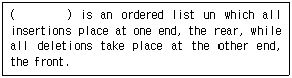
- A Stack
- A Queue
- A graph
- A liner list
(정답률: 65%)
5. 스택의 응용 분야와 거리가 먼 것은?
- 운영체제의 작업 스케줄링
- 함수 호출의 순서제어
- 인터럽트의 처리
- 수식의 계산
(정답률: 70%)
6. 데이터베이스에 관련된 용어의 설명으로 옳지 않은 것은?
- 튜플(tuple) - 테이블에서 열에 해당된다.
- 애트리뷰트트(attribute) - 데이터의 가장 작은 논리적 단위로서 파일 구조상의 데이터 항목 또는 데이터 필드에 해당한다.
- 릴레이션(relation) - 릴레이션 스킴과 릴레이션 인스턴스로 구성된다.
- 도메인(domain) - 애트리뷰트가 취할 수 있는 값들의 집합이다.
(정답률: 56%)
7. 중위표기식(Inrix)으로 표현은 아래 식에대하여 후위표기식(Postfix)으로 옳게 기술한 것은?
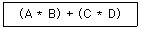
- + A B * * C D
- + * A B * C D
- A B * C D * +
- * A B + * C D
(정답률: 83%)
8. 현실 세계로부터 단순한 관찰이나 측정을 통해 수집된 사 실이나 값을 무엇이라 하는가?
- 정보(information)
- 지식(knowledge)
- 보고서(report)
- 자료(data)
(정답률: 66%)
9. 개체-관계 모델(E-R)의 그래픽 표현으로 옳지 않은 것은?
- 개체타입 - 사각형
- 속성 - 원형
- 관계타입 - 마름모
- 연결 - 삼각형
(정답률: 88%)
10. 관계 데이터 언어(Data Language)중에서 데이터의 무결성, 회복과 밀접한 관련이 있는 것은?
- 데이터 정의어(Data Definition Language)
- 데이터 조작어(Data Manipulation Language)
- 데이터 제어어(Data Control Language)
- 데이터 관리어(Data Management Language)
(정답률: 61%)
11. 관계 해석(Relational Calculus)에 대한 설명으로 잘못된 것은?
- 튜플 관계 해석과 도메인 관계 해석이 있다.
- 원하는 정보와 그 정보를 어떻게 유도하는가를 기술하는 절차적인 특성을 가진다.
- 원하는 릴레이션을 정의하는 방법을 제공한다.
- 수학의 predicate calculus 기반을 두고 있다.
(정답률: 61%)
12. 다음 영문이 설명하는 사람으로 가장 적절한 것은?
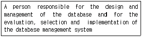
- end-use
- system engineer
- database administrator
- application programmer
(정답률: 84%)
13. 트랜잭션(Transaction)은 보통 일련의 연산 집합이란 의미로 사용하며 하나의 논리적 기능을 수행하는 작업의 단위이다. 트랜잭션이 가져야 할 특성으로 거리가 먼 것은?
- 원자성 (Atomicity)
- 격리성 (Isolation )
- 영속성 (Durability)
- 병행성 (Concurrency )
(정답률: 69%)
14. 데이터베이스 보안에 대한 설명으로 옳지 않은 것은?
- 보안을 위한 데이터 단위는 테이블 전체로부터 특정 테이블의 특정한 행과 열 위치에 있는 특정한 데이터 값에 이르기까지 다양하다.
- 각 사용자들은 일반적으로 서로 다른 객체에 대하여 다른 접근권리 또는 권한을 갖게 된다.
- 불법적인 데이터의 접근으로부터 데이터베이스를 보호하는 것이다.
- 보안을 위한 사용자들의 권한 부여는 관리자의 정책결정 보다는 DBMS가 자체 결정하여 제공한다.
(정답률: 83%)
15. 선형 구조가 아닌 것은?
- 스택
- 트리
- 큐
- 연결 리스트
(정답률: 83%)
16. 다음 트리의 터미널 노드 수는 ?
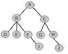
- 2
- 4
- 5
- 10
(정답률: 68%)
17. 데이터베이스의 물리적 설계가 아닌 것은 ?
- 저장 레코드 양식 설계
- 트랜잭션 인터페이스 설계
- 레코드 집중의 분석 및 설계
- 접근 경로 설계
(정답률: 66%)
18. 데이터베이스의 등장 이유로 보기 어려운 것은?
- 여러 사용자가 데이터를 공유해야 할 필요가 생겼다.
- 삽입, 삭제, 갱신 등을 통해서 현재의 데이터를 동적으로 유지하고 싶었다.
- 데이터의 가용성 증가를 위해 중복을 허용하고 싶었다.
- 물리적인 주소가 아닌 데이터 값에 의한 검색을 수행하고 싶었다.
(정답률: 87%)
19. 릴레이션의 특성에 대한 설명으로 옳지 않은 것은?
- 릴레이션에 포함된 튜플들은 모두 상이하다.
- 릴레이션에 포항된 튜플 사이에는 순서가 없다.
- 릴레이션을 구성하는 애트리뷰트 사이에는 일정한 순서가 있다.
- 애트리뷰트 값은 원자 값이다.
(정답률: 84%)
20. 정규화에 관한 설명으로 옳지 않은 것은?
- 릴레이션 R의 도메인들의 값이 원자값만을 가지면서 R은 제1정규형에 해당된다.
- 릴레이션 R이 제1정규형물 만족하면서, 키가 아닌 모든 기본 키에 완전 함수 종속이면 릴레이션 R은 제2정규형에 해당된다.
- 정규형들은 차수가 높아질수록(제1정규형→제5정규형)만족시켜야 할 제약조건이 감소된다.
- 릴레이션 R이 제2정규형을 만족하면서 , 키가 아닌 모든 속성들이 기본 키에 이행적으로 함수 종속되지 않으면 릴레이션 R은 제3정규형에 해당된다.
(정답률: 75%)
2과목: 전자 계산기 구조
21. 다음의 마이크로 오퍼레이션이션(micro-operation)은 무엇을 수행하는 것인가?
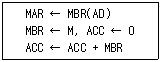
- store ACC
- load to ACC
- AND to ACC
- ADD to ACC
(정답률: 58%)
22. 인터럽트 서비스 루틴을 수행하기 전에 반드시 사용되는 레지스터?
- PC(program counter)
- AC(Accumulator)
- MBR(memory buffer register)
- MAR(memory address register)
(정답률: 64%)
23. 마이크로 오퍼레이션을 순서적으로 발생 시키는데 필요한 것은?
- 스위치
- 레지스터
- 누산기
- 제어신호
(정답률: 66%)
24. 0-번지 명령형(zero-address instruction format)을 갖는 컴퓨터 구조 원리는?
- An accumulator extension register
- Virtual memory architecture
- Stack archilecture
- Micro-programming
(정답률: 75%)
25. 다음 중 4단계 명령어 파이프라인의 수행 순서가 올바른 것은?
- IF(lnstruction Fetch)→OF(Operand Fetch)→ID(Instruction Decode)→EX(Execution)
- IF(Instruction Fetch)→ID(Instruction Decode)→OF(Operand Fetch)→EX(Execution)
- ID(Instruction Decode)→IF(Instruction Fetch)→OF(Operand Fetch)→EX(Execution)
- OF(Operand Fetch)→ID(Instruction Decode)→IF(Instruction Fetch)→EX(Execution)
(정답률: 60%)
26. 다음 중 플린에 의한 컴퓨터 구조방식에서 한 시스템 내에 n개의 프로세서들이 서로 다른 명령어들과 데이터를 처리하는 방식은?
- 단일 인스트럭션 스트링-단일 데이터 스트림(SISD)
- 단일 인스트럭션 스트링-복수 데이터 스트림(SIMD)
- 복수 인스트럭션 스트링-단일 데이터 스트림(MISD)
- 복수 인스트럭션 스트링-복수 데이터 스트림(MIMD)
(정답률: 48%)
27. 다음이 설명하고 있는 레지스터는?
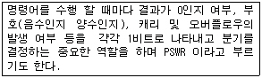
- 프로그램 레지스터
- 플래그 레지스터
- 인덱스 레지스터
- 주소 레지스터
(정답률: 62%)
28. 어느 컴퓨터의 기억 용량이 1Mbyte이다. 이때 필요한 주소선의 수는 ?
- 8개
- 16개
- 20개
- 24개
(정답률: 66%)
29. 플립플롭 중 입력 단자가 하나이며 “1”이 입력될때 마다 출력 단자의 상태가 바뀌는 것은?
- SC flip-flop
- T flip-flop
- SCT flip-flop
- ST flip-flop
(정답률: 82%)
30. 3-주소 명령어의 장점에 해당하는 것은?
- 프로그램 길이가 짧아진다.
- 1개의 명령어만을 사용하여 프로그램을 작성해야 한다.
- 주소지정을 할 수 있는 기억장치 주소 영역이 증가한다.
- 임시 저장 장소가 필요하다.
(정답률: 42%)
31. 논리 회로를 바르게 표시한 논리식은 ?
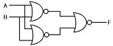
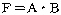
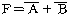
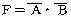
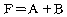
(정답률: 51%)
32. 다음에 실행할 명령어 번지를 갖고 있는 레지스터는 ?
- MBR
- MAR
- IR
- PC
(정답률: 62%)
33. 다음은 인터럽트 체제의 동작을 나열하였다. 수행 순서를 올바르게 표현한 것은?
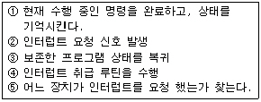
- ②→⑤→①→④→③
- ②→①→④→⑤→③
- ②→①→⑤→④→③
- ②→④→①→⑤→③
(정답률: 71%)
34. DMA(Direct Memory Access)의 구성에 포함되지 않는 것은 ?
- 워드 카운트 레지스터
- 데이지 체인
- 주소 레지스터
- 자료 버퍼 레지스터
(정답률: 60%)
35. I/O operation과 관계없는 것은?
- Channel
- Handshaking
- Interrupt
- Emulation
(정답률: 60%)
36. 단항(Unary) 연산의 종류가 아닌 것은?
- complement
- OR
- shift
- Rotate
(정답률: 69%)
37. 인스트럭션이 수행될 때 주기억장치에 접근하려면 인스트럭션에서 사용한 주소는 주기억장치에 직접 적용될 수 있는 기억장소의 주소로 변환되어야한다. 이 때 주소로부터 기억장소로의 변환에 사용되는 것은 ?
- 사상 함수
- DMA
- 캐시 메모리
- 인터럽트
(정답률: 53%)
38. 연산자(OP code)의 수행에 필요한 자료를 보관시켜 놓은 장소로서 적당하지 않은 것은?
- 주기억장치
- 레지스터
- 스택
- 마그네틱 디스크
(정답률: 62%)
39. 다음 진리표에 해당하는 논리식(T)으로 맞는 것은?
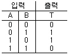
- T=A'B + AB'
- T=AB + A‘B'
- T=AA' + BB'
- T=AA' + B'B'
(정답률: 73%)
40. 프로그램 상태 워드(Program Status Word)에 대한 올바른 설명은?
- 시스템의 동작은 CPU안에 있는 program counter에 의해 제어된다.
- Interrupt 레지스터는 PSW의 일종이다.
- 명령실행 순서를 제어하고, 실행중인 프로그램에 관계가 있는 시스템의 상태를 나타낸다.
- PSW는 8bit의 크기이다.
(정답률: 58%)
3과목: 운영체제
41. 유닉스 시스템에서 커널의 수행 기능에 해당되지 않는 것은?
- 프로세스 관리
- 기억장치 관리
- 입/출력관리
- 명령어 해독
(정답률: 74%)
42. 가상기억장치에 대한 설명으로 옳지 않은 것은?
- 연속 배당 방식에서의 기억 장소 단편화 문제를 적극적으로 해결할 수 있다.
- 기억 장치의 이용률과 다중 프로그래밍의 효율을 높일 수 있다.
- 가상기억장치의 일반적인 구현방법은 페이징 기법과 세그먼테이션 기법이 있다.
- 주기억장소의 물리적 공간 보다 큰 프로그램은 실행될 수 없다.
(정답률: 72%)
43. 교착상태 발생의 조건이 아닌 것은?
- Mutual exclusion
- Preemption
- Hold-and-wait
- Circular wait
(정답률: 57%)
44. 유닉스시스템에서 새로운 프로세스를 생성하는 시스템 호출은?
- fork()
- exec()
- exit()
- make()
(정답률: 70%)
45. 분산시스템에 대한 설명으로 거리가 먼 것은?
- 다수의 사용자들이 데이터를 공유할 수 있다.
- 다수의 사용자들 간에 통신이 용이하다.
- 귀중한 장치들이 다수의 사용자들에 의해 공유될 수있다.
- 집중형(centralized) 시스템에 비해 소프트웨어의 개발이 용이하다
(정답률: 77%)
46. 운영체제를 기능에 따라 분류했을 경우 아래의 설명에 해당하는 제어 프로그램(control program)은?
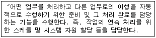
- 감시 프로그램(supervisor program)
- 데이터 관리 프로그램(data management program)
- 작업 제어 프로그램(job control program)
- 문제 프로그램(problem program)
(정답률: 72%)
47. 시스템 타이머에서 일정한 시간이 만료된 경우나 오퍼레이터가 콘솔상의 인터럽트 키를 입력한 경우 발생하는 인터럽트는?
- 프로그램 검사 인터럽트
- SVC 인터럽트
- 입/출력 인터럽트
- 외부 인터럽트
(정답률: 40%)
48. UNIX에서 파일의 사용 허가를 정하는 명령은?
- finger
- chmod
- fsck
- ls
(정답률: 77%)
49. 분산 운영체제 구조 중 다음의 특징을 갖는 구조는?
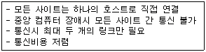
- 링 연결구조(RING)
- 다중접근 버스 연결구조(MULTI ACCESS BUS)
- 계층 연결구조(HIERARCHY)
- 성형 연결구조(STAR)
(정답률: 72%)
50. 실행 중인 프로세스는 일정 시간에 메모리의 일정 부분만을 집중적으로 참조한다는 개념을 의미하는 것은?
- Locality
- Monitor
- Spooling
- Fragmentation
(정답률: 64%)
51. 태스크 스케줄링 방법 중 Round-Robin 방식에 대한 설명 중 옳지 않은 것은?
- FIFO 방식으로 선점(preemptive)형 기법이다.
- 처리하여야 할 작업의 양이 가장 작은 프로세스에게 cpu를 할당하는 기법이다.
- 대화식 사용자에게 적당한 응답시간을 보장한다.
- 시간할당량이 작을 경우 문맥교환에 따른 오버헤드가 커진다.
(정답률: 50%)
52. UNIX 운영체제의 특징이 아닌 것은?
- 높은 이식성
- 계층적 파일 시스템
- 단일 사용자 시스템
- 다중 사용자 환경
(정답률: 79%)
53. 로더(loader)의 기능이 아닌 것은?
- Allocation
- Linking
- Relocation
- Compile
(정답률: 68%)
54. 다음은 무엇에 대한 설명인가?
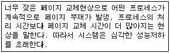
- Page-Fault
- Segmentation
- Thrashing
- Working-Set
(정답률: 66%)
55. 해싱 등의 사상 함수를 사용하여 레코드 키에 의한 주소 계산을 통해 레코드를 접근할 수 있도록 구성한 파일은?
- 순차 파일
- 인덱스 파일
- 직접 파일
- 다중 링 파일
(정답률: 50%)
56. UNIX 시스템에서 파일보호를 위해 사용하는 방법으로 read, write, execute 등 세 가지 접근 유형을 정의하여 제한된 사용자에게만 접근을 허용하고 있다. UNIX의 이러한 파일보호 방법은 파일 보호 기법의 종류 중 무엇에 해당하는가?
- 파일의 명명(Naming)
- 접근제어(Access control)
- 비밀번호(Password)
- 암호화(Cryptography)
(정답률: 81%)
57. 선입선출(FIFO) 교체 알고리즘을 사용하고 참조하는 페이지 번호 순서는 다음과 같다. 할당된 페이지 프레임의 수가 4개이고 이들 페이지 프레임은 모두 비어 있다고 가정할 경우 몇 번의 페이지 부재가 발생하는가?
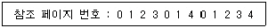
- 7
- 8
- 9
- 10
(정답률: 48%)
58. 선점(preemptive) 방식을 사용하는 CPU 스케줄링 방식은?
- SRT 스케줄링
- FIFO 스케줄링
- HRN 스케줄링
- SJF 스케줄링
(정답률: 45%)
59. 가장 바람직한 스케줄링 정책은?
- CPU 이용률을 줄이고 반환시간을 늘린다.
- 응답시간을 줄이고 CPU 이용율은 늘린다.
- 대기시간을 늘리고 반환시간을 줄인다.
- 반환시간과 처리율을 늘린다.
(정답률: 80%)
60. HRN(Highest Response Scheduling) 스케쥴링 기법에서 우선순위 결정 방법은?
- (대기시간 + 서비스 시간) / 대기 시간
- (대기시간 + 서비스 시간) / 서비스 시간
- 대기시간 / (대기 시간 + 서비스 시간)
- 서비스 시간 / (대기 시간 + 서비스 시간)
(정답률: 69%)
4과목: 소프트웨어 공학
61. 구조적 프로그래밍에서 사용하는 기본적인 제어구조에 해당하지 않는 것은?
- 순차(sequence)
- 반복(iteration)
- 호출(call)
- 선택(selection)
(정답률: 54%)
62. 소프트웨어에 대한 변경을 관리하기 위해 개발된 일련의 활동을 나타내며 이런 변경이 전체 비용이 최소화되고 최소한의 방해가 소프트웨어의 현 사용자에게 야기되도록 보증하는 것을 목적으로 하는 것은?
- 위험 관리
- 형상 관리
- 프로젝트 관리
- 유지보수 관리
(정답률: 61%)
63. 객체지향 소프트웨어공학에서 하나 이상의 유사한 객체들을 묶어서 하나의 공통된 특성을 표현한 것은?
- 메시지
- 클래스
- 추상화
- 메소드
(정답률: 77%)
64. 프로젝트 추진 과정에서 예상되는 각종 돌발 상황을 미리 예상하고 이에 대한 적절한 대책을 수립하는 일련의 활동을 무엇이라고 하는가?
- 위험관리
- 일정관리
- 코드관리
- 모형관리
(정답률: 82%)
65. 한 모듈 내의 각 구성 요소들이 공통의 목적을 달성하기 위하여 서로 얼마나 관련이 있는지의 기능적 연관의 정도를 나타내는 것은?
- 결합도(coupling)
- 응집도(cohesion)
- 구조도(structure)
- 일치도(unity)
(정답률: 58%)
66. 소프트웨어 공학에 대한 가장 적절한 설명은?
- 소프트웨어 위기(software crisis)를 완전히 해결한 공학적 원리의 체계이다.
- 신뢰성 있는 소프트웨어를 만들기 위한 도구만을 연구하는 학문이다.
- 가장 경제적으로 신뢰도 높은 소프트웨어를 만들기 위한 방법, 도구와 절차들의 체계이다.
- 점차 많은 비용이 소요되는 소프트웨어 개발에서 가장 경제적인 방법을 찾고자 하는 것이다.
(정답률: 71%)
67. 다음은 무엇에 대한 설명인가?
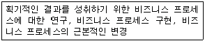
- BPR
- CRC
- EBP
- DFD
(정답률: 57%)
68. 현재 소프트웨어 개발 비용 중 가장 많은 비용이 요구되는 단계는?
- 분석
- 설계
- 구현
- 유지보수
(정답률: 79%)
69. 객체를 이용하여 데이터와 연산을 하나의 단위로 묶는 기법은?
- instance
- polymorphism
- inheritance
- encapsulation
(정답률: 63%)
70. 소프트웨어 품질관리 기술에서 품질목표의 항목과 거리가 먼 것은?
- 정확성
- 유지보수성
- 무결성
- S/W 종속성
(정답률: 72%)
71. 자료흐름도(DFD)에서 처리(process)를 나타내는 기호는?
- 원
- 사각형
- 화살표
- 삼각형
(정답률: 47%)
72. CASE(Computer-Aided Software Engineering)에 대한 설명으로 옳지 않은 것은?
- 소프트웨어 개발의 작업들을 자동화하는 것이다.
- 소프트웨어 도구와 방법론의 결합이다.
- 소프트웨어의 생산성 문제를 해결할 수 있다.
- 개발과정이 빠른 대신 재사용성이 떨어진다.
(정답률: 76%)
73. 소프트웨어 테스트에 사용되는 방식으로 모듈의 논리적 구조를 체계적으로 점검하는 구조 테스트이며, 이 방식의 유형에는 기초 경로 검사, 조건 검사, 데이터 흐름 검사, 루프 검사 등이 있는 것은?
- 화이트 박스 테스트
- 블랙 박스 테스트
- 블루 박스 테스트
- 레드 박스 테스트
(정답률: 78%)
74. 컴퓨터의 발달 과정에서 소프트웨어의 개발 속도가 하드웨어의 개발 속도를 따라가지 못해 사용자들의 요구 사항을 감당할 수 없는 문제가 발생함을 의미하는 것은?
- 소프트웨어 위기(Crisis)
- 소프트웨어 오류(Error)
- 소프트웨어 버그(Bug)
- 소프트웨어 유지보수(Maintenance)
(정답률: 80%)
75. 소프트웨어 프로젝트 관리의 주요 구성요소인 3P에 해당하지 않는 것은?
- People
- Problem
- Process
- Power
(정답률: 85%)
76. 람바우의 객체 지향 분석과 거리가 먼 것은?
- 정적 모델링
- 기능 모델링
- 동적 모델링
- 객체 모델링
(정답률: 68%)
77. 단계별 소프트웨어 검사의 절차가 옳은 것은?
- 통합 검사 → 단위 검사 → 시스템 검사
- 통합 검사 → 시스템 검사 → 단위 검사
- 단위 검사 → 통합 검사 → 시스템 검사
- 단위 검사 → 시스템 검사 → 통합 검사
(정답률: 49%)
78. 소프트웨어의 재사용으로 얻어지는 이익이 아닌 것은?
- 표준화의 원칙을 무시할 수 있다.
- 프로젝트의 개발 위험을 줄여줄 수 있다.
- 프로젝트의 개발기간과 비용을 줄일 수 있다.
- 개발자의 생산성을 향상시킬 수 있다.
(정답률: 85%)
79. 다음 중 결합도(Coupling)가 가장 낮은 것은?
- 공유 결합(common coupling)
- 제어 결합(control coupling)
- 외부 결합(external coupling)
- 스탬프 결합(stamp coupling)
(정답률: 53%)
80. 프로토타입 모형의 장점으로 가장 적절한 것은?
- 비용과 시간의 절감
- 책임 한계의 명백한 구분
- 요구사항의 충실 반영
- 프로젝트 관리의 용이
(정답률: 72%)
5과목: 데이터 통신
81. HDLC 데이터 전송 모드의 동작 모드가 아닌 것은?
- 정규 응답 모드(Normal Response Mode)
- 동기 응답 모드(Synchronous Response Mode)
- 비동기 응답 모드(Asynchronous Response Mode)
- 비동기 평형 모드(Asynchronous Balanced Mode)
(정답률: 42%)
82. 다음에서 자동 반복 요청(ARQ)의 종류가 아닌 것은?
- 자동 반송 ARQ
- 정지대기 ARQ
- 연속적 ARQ
- 적응적 ARQ
(정답률: 42%)
83. OSI 7계층과 이와 관련된 표준으로 서로 옳지 않게 연결된 것은?
- 물리 계층 : RS-232C
- 데이터링크 계층 : HDLC
- 네트워크 계층 : X.25
- 전송 계층 : ISDN
(정답률: 54%)
84. 정보에 따라 위상을 변환시키는 디지털 변조 방식은?
- ASK
- FSK
- PSK
- PCM
(정답률: 45%)
85. 문자동기 전송방식에서 데이터 투과성(Data Transparent)을 위해 삽입되는 제어문자는?
- ETX
- STX
- DLE
- SYN
(정답률: 57%)
86. 데이터 전송을 하고자하는 모든 단말장치에 서로 대등한 입장에 있으며, 송신 요구를 먼저한 쪽이 송신권을 갖는 방식을 무엇이라 하는가?
- Contention 방식
- Polling 방식
- Selection 방식
- Routing 방식
(정답률: 49%)
87. 데이터 전송 제어 절차 5단계 동작 과정을 순서대로 적은 것은?
- 통신회선 접속→데이터링크 설정→데이터 전송→데이터 링크 종결→통신회선 절단
- 데이터링크 확립→통신회선 접속→데이터 전송→데이터 링크 종결→통신회선 절단
- 통신회선 접속→데이터링크 설정→데이터 전송→통신회선 절단→데이터 링크 종결
- 데이터링크 설정→통신회선 접속→데이터 전송→통신회선 절단→데이터 링크 종결
(정답률: 74%)
88. 3∼3.4㎑)내의 아날로그 신호로 변환(변조)한 후 음성 전송용으로 설계된 전송로에 송신한다든지 반대로 전송로부터의 아날로그 신호를 디지털 신호로 변환(복조) 하는 장치를 무엇이라 하는가?
- 모뎀(MODEM)
- 단말(Terminal)
- 전화교환기
- 허브(HUB)
(정답률: 75%)
89. 전송 데이터가 있는 동안에만 시간 슬롯을 할당하는 다중화 방식은?
- 통계적 시분할 다중화
- 광파장 분할 다중화
- 동기식 시분할 다중화
- 주파수 분할 다중화
(정답률: 55%)
90. 다음 중 음성 주파수 대역이 4kHz일 때, 디지털화하기에 가장 적절한 샘플 주파수는?
- 2kHz
- 4kHz
- 7kHz
- 10kHz
(정답률: 36%)
91. 순방향 에러 수정(Forward Error Correction) 방식에 사용되는 검사 방식은?
- 수평 패리티 검사 방식
- 군 계수 검사 방식
- 수직 패리티 검사 방식
- 해밍 코드 검사 방식
(정답률: 54%)
92. 2, 정보통신 기술발전에 의해 출현한 정보화의 한 형태로서, 한 건물 또는 공장, 학교 구내, 연구소 등의 일정지역 내의 설치된 통신망으로서 각종 기기 사이의 통신을 실행하는 통신망은?
- LAN
- WAN
- MAN
- ISDN
(정답률: 74%)
93. OSI참조 모델에서 데이터 링크 계층은 몇 계층에 해당 되는가?
- 계층 2
- 계층 3
- 계층 5
- 계층 7
(정답률: 66%)
94. 단순한 정보의 수집 및 전달 기능뿐만 아니라 정보의 저장, 가공, 관리 및 검색 등과 같이 정보에 부가가치를 부여하는 통신망은?
- LAN
- WAN
- VAN
- MAN
(정답률: 76%)
95. 아날로그-디지털 부호화 방식인 송신측 PCM(Pulse Code Modulation) 과정을 순서대로 나타낸 것은?
- 표본화(Sampling)→양자화(Quantization)→부호화(Encoding)
- 양자화(Quantization)→부호화(Encoding)→표본화(Sampling)
- 부호화(Encoding)→양자화(Quantization)→표본화(Sampling)
- 표본화(Sampling)→부호화(Encoding)→양자화(Quantization)
(정답률: 75%)
96. 한 전송로의 데이터 전송 시간을 일정한 시간 폭(time slot)으로 나누어 각 부 채널에 차례로 분배하는 방식의 다중화는?
- 시분할 다중화
- 주파수분할 다중화
- 위상 분할 다중화
- 위치 분할 다중화
(정답률: 79%)
97. 아날로그 데이터(음성)를 디지털 신호로 전송하기에 적합한 변조 방법은?
- AM
- PCM
- ASK
- FM
(정답률: 64%)
98. 통신 프로토콜의 정의로 가장 올바른 것은?
- 정보 전송의 통신 규약이다.
- 통신 하드웨어의 표준 규격이다.
- 통신 소프트웨어의 개발 환경이다.
- 하드웨어와 사람 사이의 인터페이스이다.
(정답률: 75%)
99. VAN의 통신처리 기능으로서의 회선제어, 접속 등의 통신 절차를 변환하는 기능은?
- 프로토콜 변환
- 부호 변환
- 양자화 변환
- 제어 변환
(정답률: 53%)
100. OSI(Open System Interconnection) 7 계층에서 다음 설명에 해당되는 계층은?
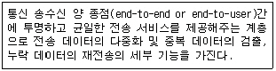
- 응용 계층
- 네트워크 계층
- 전송 계층
- 표현 계층
(정답률: 65%)